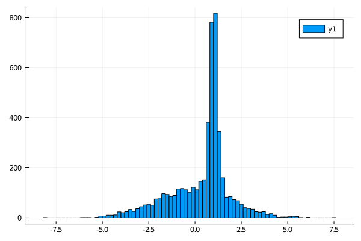

A gaussian mixture model
First of all we define our model,
using KissABC
using Distributions
function model(P,N)
μ_1, μ_2, σ_1, σ_2, prob=P
d1=randn(N).*σ_1 .+ μ_1
d2=randn(N).*σ_2 .+ μ_2
ps=rand(N).<prob
R=zeros(N)
R[ps].=d1[ps]
R[.!ps].=d2[.!ps]
R
endmodel (generic function with 1 method)Let's use the model to generate some data, this data will constitute our dataset
parameters = (1.0, 0.0, 0.2, 2.0, 0.4)
data=model(parameters,5000)5000-element Array{Float64,1}:
1.2681506477559843
3.1198677709958216
-2.9147012075605185
0.5883087917511751
2.918614410591893
1.0356289803603405
1.1223160940870862
1.2426477053330847
-0.7750559925329057
1.5139180089632553
⋮
-0.07210120104299064
1.1302237152121883
1.208115630789798
1.1355596611803755
1.5907597682768282
-2.1500649423438154
1.1738930415176614
0.8555750472752077
1.102410313359028let's look at the data
using Plots
histogram(data)
we can now try to infer all parameters using KissABC, first of all we need to define a reasonable prior for our model
prior=Factored(
Uniform(0,3), # there is surely a peak between 0 and 3
Uniform(-2,2), #there is a smeared distribution centered around 0
Uniform(0,1), # the peak has surely a width below 1
Uniform(0,4), # the smeared distribution surely has a width less than 4
Beta(4,4) # the number of total events from both distributions look about the same, so we will favor 0.5 just a bit
);let's look at a sample from the prior, to see that it works
rand(prior)(2.5616920040963427, 1.2118434056599758, 0.11174802234017278, 3.6357811652673186, 0.46021270766273764)now we need a distance function to compare datasets, this is possibly the worst distance we could use, but it will work out anyway
function D(x,y)
r=0:0.01:1
sum(abs2,quantile.(Ref(x),r).-quantile.(Ref(y),r))/length(r)
endD (generic function with 1 method)we can now run ABCDE to get the posterior distribution of our parameters given the dateset data
res,Δ=ABCDE(prior,model,data,D,0.02,params=5000,parallel=true,verbose=false);let's see the median and 95% confidence interval for the inferred parameters and let's compare them with the true values
function getstats(P,V)
(
param=P,
median=median(V),
lowerbound=quantile(V,0.05),
upperbound=quantile(V,0.95)
)
end
stats=getstats.((:μ_1, :μ_2, :σ_1, :σ_2, :prob),[getindex.(res,i) for i in 1:5])
for is in eachindex(stats)
println(parameters[is], " → ", stats[is])
end1.0 → (param = :μ_1, median = 0.980847422478838, lowerbound = 0.8731023623641463, upperbound = 1.1053267954357158)
0.0 → (param = :μ_2, median = 0.01958298504626437, lowerbound = -0.12795113081963796, upperbound = 0.1607915626080115)
0.2 → (param = :σ_1, median = 0.22749821966638267, lowerbound = 0.05056830398406158, upperbound = 0.43359850034389463)
2.0 → (param = :σ_2, median = 2.0335521591616477, lowerbound = 1.931554877728764, upperbound = 2.1861240589924855)
0.4 → (param = :prob, median = 0.41236832714006094, lowerbound = 0.3550135092059728, upperbound = 0.46820217552618526)we can see that the true values lie inside the confidence interval.
This page was generated using Literate.jl.